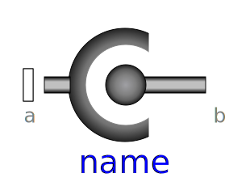
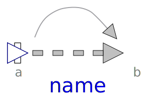

| Model |
Description |
| Prismatic |
Prismatic joint and actuated prismatic joint (1 translational
degree-of-freedom, 2 potential states)

|
| Revolute |
Revolute and actuated revolute joint (1 rotational
degree-of-freedom, 2 potential states)

|
| Cylindrical |
Cylindrical joint (2 degrees-of-freedom, 4 potential
states)

|
| Universal |
Universal joint (2 degrees-of-freedom, 4 potential
states)

|
| Planar |
Planar joint (3 degrees-of-freedom, 6 potential states)

|
| Spherical |
Spherical joint (3 constraints and no potential states, or 3
degrees-of-freedom and 3 states)

|
| FreeMotion |
Free motion joint (6 degrees-of-freedom, 12 potential
states)

|
|
SphericalSpherical |
Spherical - spherical joint aggregation (1 constraint, no
potential states) with an optional point mass in the middle

|
|
UniversalSpherical |
Universal - spherical joint aggregation (1 constraint, no
potential states)

|
| GearConstraint |
Ideal 3-dim. gearbox (arbitrary shaft directions) |
| MultiBody.Joints.Assemblies |
Package of joint aggregations for analytic
loop handling. |
| MultiBody.Joints.Constraints |
Package of components that define joints by
constraints |
| Name |
Description |
 Prismatic Prismatic |
Prismatic joint (1 translational degree-of-freedom, 2 potential
states, optional axis flange) |
 Revolute Revolute |
Revolute joint (1 rotational degree-of-freedom, 2 potential
states, optional axis flange) |
 RevolutePlanarLoopConstraint RevolutePlanarLoopConstraint |
Revolute joint that is described by 2 positional constraints
for usage in a planar loop (the ambiguous cut-force perpendicular
to the loop and the ambiguous cut-torques are set arbitrarily to
zero) |
 Cylindrical Cylindrical |
Cylindrical joint (2 degrees-of-freedom, 4 potential
states) |
 Universal Universal |
Universal joint (2 degrees-of-freedom, 4 potential states) |
 Planar Planar |
Planar joint (3 degrees-of-freedom, 6 potential states) |
|  Spherical |
Spherical joint (3 constraints and no potential states, or 3
degrees-of-freedom and 3 states) |
 FreeMotion FreeMotion |
Free motion joint (6 degrees-of-freedom, 12 potential
states) |
|  FreeMotionScalarInit |
Free motion joint with scalar initialization and state
selection (6 degrees-of-freedom, 12 potential states) |
 SphericalSpherical SphericalSpherical |
Spherical - spherical joint aggregation (1 constraint, no
potential states) with an optional point mass in the middle |
 UniversalSpherical UniversalSpherical |
Universal - spherical joint aggregation (1 constraint, no
potential states) |
 GearConstraint GearConstraint |
Ideal 3-dim. gearbox (arbitrary shaft directions) |
 RollingWheel RollingWheel |
Joint (no mass, no inertia) that describes an ideal rolling
wheel (rolling on the plane z=0) |
 RollingWheelSet RollingWheelSet |
Joint (no mass, no inertia) that describes an ideal rolling
wheel set (two ideal rolling wheels connected together by an
axis) |
 Assemblies Assemblies |
Components that aggregate several joints for analytic loop
handling |
| Constraints |
Components that define joints by constraints |
 Internal Internal |
Components used for analytic solution of kinematic loops (use
only if you know what you are doing) |